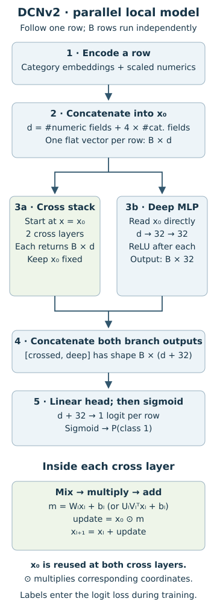
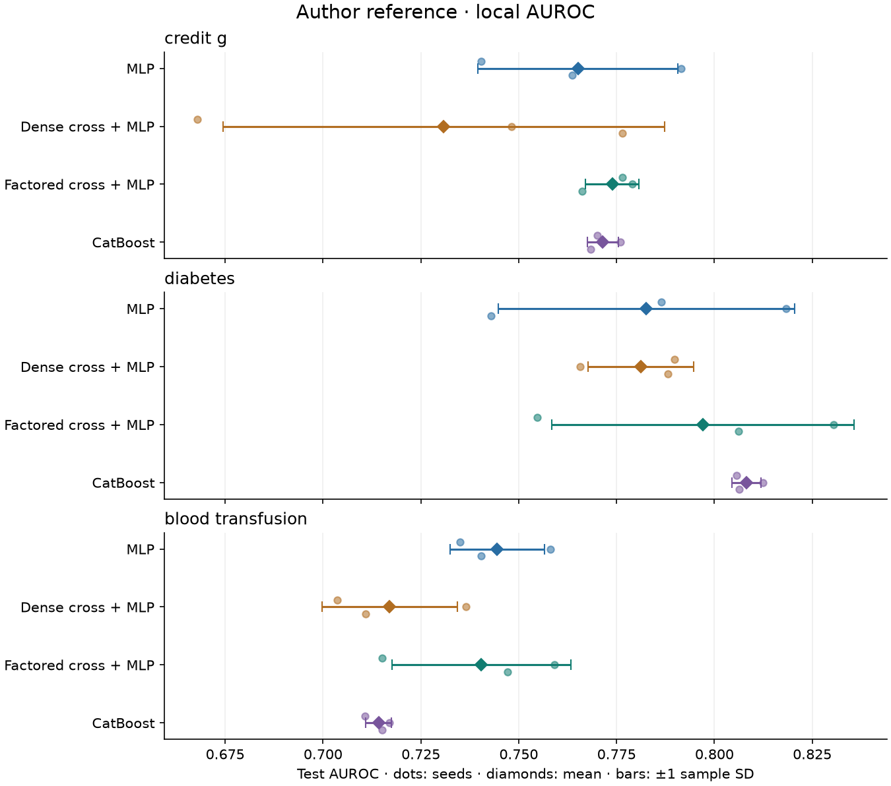
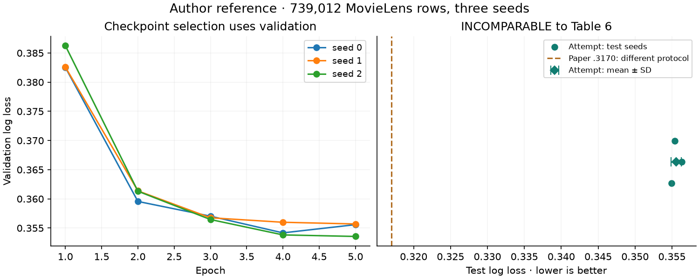

DCNv2: make the interaction an operation
Build a cross network. Trace its polynomial terms. Audit what a reproduction actually reproduces.
In SAINT, another row could change a prediction by supplying a key and value. Today, keep the computation within one row and change the operation: multiply its original features by learned mixtures of its current representation. Your tangible win is a cross layer you can derive, implement, and distinguish from an ordinary residual layer.
Core route: §§1–5, interactive checks, then the notebook. Research route: §§6–9 and the MovieLens reproduction ledger. Work in chunks; pause after each diagram and explain the operation before moving on.
Primary reading: Wang et al., DCN V2, arXiv v2 / WWW 2021: §3.2 Eq.1, Fig.1, §3.5 Eqs.2–4, then §7.1 and Table 6. Read those in that order. The pinned TensorFlow Recommenders Cross layer is a second implementation reference.
Recall before reading
One extra cold question from L047: why could changing a companion batch alter SAINT’s output in evaluation mode? Keep that answer available: we will test the corresponding property of DCNv2.
1. Why explicitly multiply features?
Imagine predicting whether a user will click a movie recommendation. A linear score of age and movie category can add an age effect and a category effect. It cannot, without a new feature, make the effect of age depend on category. In a simple numeric example, s = a·x₁ + b·x₂ has a constant response to x₁. Add c·x₁x₂ and that response becomes a + c·x₂: the second feature changes the effect of the first.
A feature cross is such an interaction term. A product such as x₁x₂ is degree two; x₁²x₂ is degree three because its exponents sum to three. Repeated coordinates count: “degree three” does not require three distinct columns. These products are explicit when multiplication appears directly in the computational rule. An MLP, a stack of learned affine transformations and nonlinear activations, can learn interaction behavior indirectly. An explicit cross changes which functions are easy for the architecture to represent; it does not guarantee higher held-out accuracy.
That distinction matters to the mission. Before crediting a relational model for learning useful interactions, compare it with a strong single-row model that can already multiply informative fields. DCNv2 is one candidate for that baseline. It cannot retrieve a missing history or invent a database join.
Model architecture — from one row to a probability
The diagram shows the parallel layout used in our local dense and factored cross models. B denotes batch size and d is the width of the concatenated row vector x₀. Both branches receive the same x₀; their outputs meet only at concatenation. Trace the two routes before studying an individual cross layer.

Read the path: the cross branch retains width d, while the deep branch applies learned linear maps followed by ReLU (replace negative coordinates with zero) to produce 32 values. Concatenation places the vectors side by side, producing d + 32 values per row. A learned linear head maps these to a single logit, an unbounded score; sigmoid converts it to a probability. Training uses a stable binary loss on the logit. Every cross layer receives both the evolving xₗ and the unchanged original x₀. Here ⊙ means multiplication of corresponding coordinates; §2 derives that update.
Variants: replacing W with factors UVᵀ changes the internal cross operation, not this routing. In the paper's stacked layout, the MLP instead reads the final crossed vector, and its output alone feeds the head; §5 compares both layouts interactively. The MLP-only control removes the cross branch. The nonlinear mixture extension in §6 changes the cross block and is not one of the trained arms pictured here. Source: DCN V2 §3.4 and Fig.1.
Trace before coding: if you change a different row in the batch, which arrow here could carry that change to this row's prediction? Explain your answer from the connections.
2. Derive the cross layer from one coordinate
Let xₗ be the current d-dimensional state at layer l, starting at x₀. Let Wₗ be a learned d-by-d matrix and bₗ a learned length-d bias vector. The symbol ⊙ means elementwise multiplication: coordinates in corresponding positions multiply. DCNv2’s basic update is:
Read it in three steps. First form a different learned mixture of the current coordinates for each output coordinate. Next multiply each mixture by the corresponding coordinate of the original input. Finally add the current state as a residual. The residual preserves a direct route for information and gradients, as in L042, but the update now has an explicit multiplicative structure. §3.2, Eq.1.
For the default picture, x₀ = xₗ = [2,3], W has rows [1,1] and [0,1], and b = [1,−1]. The matrix product is [5,3]. Add b to obtain [6,2]; multiply by [2,3] to obtain [12,6]; add the residual to obtain [14,9]. Moving W₁₂ changes only the first output coordinate in this one-layer example. Its change is 2 × ΔW₁₂ × 3.
Now expand coordinate i in the first layer, using j for the coordinate being mixed:
The first two terms are linear in x₀. The sum contains quadratic products, including a square when i = j. We did not allocate a vector of all d² products; the matrix multiplication followed by elementwise multiplication computes their weighted contributions. Wᵢⱼ is learned and shared across examples. It is neither a probability nor an attention score normalized over the row’s features.
Two code traps: placing b outside the multiplication changes the function, and replacing the anchored x₀ with xₗ changes the recurrence after the first layer. A shape check catches neither. In row-batch notation X has shape [B,d], and the affine operation is XWᵀ + b when W is stored as [out,in], as PyTorch stores it. B is batch size; it is not part of the feature-interaction matrix.
What changed from the original DCN?
The original vector cross uses a scalar wₗᵀxₗ, multiplied by all coordinates of x₀, plus an outside bias and the residual. Its multiplicative part corresponds to a matrix with the same row vector repeated: every output coordinate receives the same mixture before multiplication by its own x₀ coordinate. DCNv2 gives each output coordinate its own mixture through Wₗ. The comparison is about freedom in the interaction coefficients; do not erase the difference in bias placement when matching complete equations. §4.2.
A matrix with rank one is not automatically the original vector cross: a general rank-one matrix U Vᵀ may have differently scaled rows. The repeated-row structure is a more specific restriction. Conversely, giving W d² free parameters makes the layer more expressive, but also increases the estimation and optimization burden. More representable functions do not imply a better fit from a short training run.
3. Why the degree grows by one per layer
At initialization of the recurrence, x₀ has degree one in itself. Suppose every coordinate of xₗ is a polynomial of degree at most l+1. Multiplying by the constant learned matrix Wₗ and adding bₗ cannot raise that maximum degree. Multiplying by one coordinate of x₀ raises it by at most one. Adding the residual cannot raise it further. Therefore L basic cross layers produce degree at most L+1 in x₀. “At most” allows zero coefficients and cancellations. This is a direct induction on Eq.1; it is not a statement about every possible learned network.
The scalar illustration makes the recurrence visible. With w = 1 and b = 0 in every layer, the update is xₗ₊₁ = (1+x)xₗ. One layer gives x+x²; two give x+2x²+x³. At x = 2 the correct two-layer value is 18. Reusing the current state as its own multiplier would instead produce 6+6² = 42 at layer two. It would be a different architecture with different degree growth.
The bias contributes degree-one terms after multiplication by x₀. The residual carries already-created terms forward. Neither promises that every possible polynomial coefficient can be chosen independently at depth L: the recurrence shares and factors coefficients along computation paths. Bounded degree describes representational structure, not a universal accuracy guarantee. See the paper’s polynomial analysis for its formal claims.
4. Low rank: share directions, then count the cost
A dense W has d² weights. A rank-r factorization writes W ≈ UVᵀ, where U and V each have shape [d,r]. The current state first maps down to r numbers through Vᵀ, then maps back to d through U. A matrix’s rank is the number of independent directions it can transmit. Constraining that number shares structure among interactions.
There is no activation between these factors in the basic low-rank layer. It remains one linear transformation before the multiplication, so the same polynomial-degree argument applies. If W exactly equals UVᵀ, the dense and factored forward passes should match, and their derivatives with respect to x₀ and xₗ should match. The lab checks this identity. If rank reduction discards part of W, a prediction difference is possible and must be measured. §3.5, Eq.2.
The two factor matrices contain 2dr weights, compared with d²; both variants also have d bias entries. Strict savings therefore require r < d/2. For d = 64 and r = 8, the matrix weights fall from 4,096 to 1,024. For d = 4 and r = 2, both use 16 weights. “Factored” alone is not a cost reduction.
The picture uses a singular value decomposition (SVD): a matrix is expressed using orthogonal input/output directions and nonnegative strengths called singular values. Retaining the strongest r directions gives a standard approximation. Here the strengths are 4, 2, 1, and 0.25. The displayed Frobenius error is the square root of the sum of squared entrywise differences; in this constructed SVD it is also the square root of the discarded squared singular values. With r = 1 it is √(4+1+0.0625) = 2.25.
This visual is a post-training matrix approximation explanation. In the training lab, U and V are learned directly from scratch, jointly with embeddings and the classifier. We do not first train a dense model and compress it. Different initialization and parameterization can change optimization and regularization as well as cost. A smaller matrix error is not a guarantee of better test log loss.
5. Where does the deep network read from?
DCNv2 combines explicit crosses with an MLP. The MLP alternates affine transformations, which mix and shift coordinates, with ReLU activations, which map negative values to zero. Fig.1 gives two layouts. In a stacked model, the MLP reads the final crossed state xL. In a parallel model, it reads x₀, while a separate cross branch also reads x₀; their final vectors are concatenated before the prediction head. §3.4 and Fig.1.
The head is a learned affine map to one scalar, the logit. The sigmoid function σ(z) = 1/(1+e⁻ᶻ) converts that scalar to a probability between zero and one. Binary log loss penalizes the negative log of the probability assigned to the correct class: −log(p) for y = 1, −log(1−p) for y = 0, averaged over rows. Predicting p = 0.9 for a positive row costs about 0.105; predicting 0.1 costs about 2.303. The training code uses a numerically stable loss directly on logits.
Our local models use parallel layout. The MLP-only control uses the same embedding width and hidden widths. Adding a cross branch adds parameters and changes the representation reaching the head, so this is an architectural comparison under a shared procedure, not a parameter-matched experiment isolating one operator. Both layouts are implemented and checked, including gradient flow to the cross weights.
Back to L047: this model contains no row attention or batch normalization. With fixed weights, each row’s forward pass uses only that row. Re-batching can cause tiny floating-point differences from different matrix kernels, but it must not change the available information. The lab tests this distinction using actual predictions. Training still depends on mini-batches because they determine gradient updates.
6. Extension: a mixture changes the function class
A single low-rank map may be too restrictive. The paper also proposes multiple experts, each with its own factors, and a gate that assigns input-dependent weights to their updates. K is the number of experts. The simplest expert computes Eₖ = x₀ ⊙ [UₖVₖᵀxₗ+b]. Eq.4 adds a rank-by-rank matrix Cₖ and nonlinear activations inside the low-dimensional space. Eqs.3–4.
xₗ₊₁ = xₗ + Σₖ gₖ(xₗ)Eₖ
In our provided extension, tanh maps values smoothly into (−1,1). The gate computes K learned logits from xₗ, and softmax maps them to nonnegative weights summing to one. These are chosen settings, not the only settings in the paper: it also discusses sigmoid and constant gates and other activations. At gate logits [0,0], two experts each receive weight 0.5.
The diagram’s experts isolate coordinate 1 and coordinate 2. Both already include multiplication by x₀. Mix the updates, then add xₗ once. Counting the residual once per expert is especially wrong for unnormalized gates. An input-dependent softmax or tanh means this extension no longer obeys the simple finite-degree polynomial description. We implement and gradient-check it, but the trained local and MovieLens arms use dense or linear factored crosses; they do not reproduce DCN-Mix’s results.
Cost now includes K factor pairs, K small C matrices, and the gate. Ignoring biases, our particular variant uses 2Kdr + Kr² + Kd weights. Never attach the single-expert 2dr count to the entire nonlinear mixture.
7. The local evidence: learn from the experiment we ran
We fit MLP, dense cross + MLP, factored cross + MLP, and CatBoost to three small real OpenML tables: credit_g, diabetes, and blood_transfusion. These are Tier-A substitutes, not the paper’s datasets. For each table, split seed 5 fixes a stratified 65/15/20 training/validation/test partition. Category vocabularies and numeric means/standard deviations are fitted on training rows only. Missing numeric values become the standardized training mean, zero; unseen categories receive code zero.
The three neural arms receive 20 epochs, batch size 64, Adam at 0.001, gradient norm clipping at 10, two 32-unit hidden layers, and category embedding width 4. The cross arms have two layers. Factored rank is min(4, max(1, floor(d/4))). Validation log loss chooses the checkpoint. CatBoost receives a separate fixed budget of 300 iterations, depth 6 and learning rate 0.05, with validation log-loss selection. No arm receives a hyperparameter search. Model seeds are 0, 1, and 2; these are new initializations on one fixed split, not new populations.
| Table | MLP | Dense crosses | Factored crosses | CatBoost |
|---|---|---|---|---|
| credit_g | 0.7652 ± .0256 | 0.7309 ± .0564 | 0.7739 ± .0068 | 0.7715 ± .0039 |
| diabetes | 0.7826 ± .0378 | 0.7812 ± .0134 | 0.7971 ± .0386 | 0.8081 ± .0037 |
| blood_transfusion | 0.7445 ± .0121 | 0.7170 ± .0173 | 0.7405 ± .0228 | 0.7142 ± .0032 |
AUROC measures how often a randomly selected positive receives a higher score than a randomly selected negative, with ties counted as half. It measures ranking; log loss also cares about the numerical probabilities. Validation selection uses log loss, and the report retains test log loss alongside AUROC. Do not choose the metric that produces your preferred winner after seeing the test results. Exact scores, protocols, environment and seed intervals.

Factored crosses lead on credit_g, CatBoost on diabetes, and MLP on blood_transfusion. Dense crosses have the worst mean rank here despite their larger function class. We cannot diagnose the cause from the ranking alone: optimization, initialization, regularization, capacity and budget all remain possible explanations. Changing these after seeing the test table would require a new evaluation protocol.
Rank each dataset’s seed-mean AUROC from best to worst, then average ranks across datasets. Mean ranks are 2.333 for MLP, 3.667 for dense crosses, 1.667 for factored crosses, and 2.333 for CatBoost. The Friedman rank test gives χ² = 3.8, p = 0.284: this tiny sample detects no overall difference. The Nemenyi critical difference is 2.708, larger than every pairwise rank gap. These checks do not establish equivalence. Three datasets provide little power, and asymptotic rank tests are only a rough guide at this size.
The ledger’s 95% seed intervals use a t multiplier and sample SD, conditional on the fixed split. Their width reflects training variability, not uncertainty over future data or alternative splits. Parameters also differ: on credit_g the dense model has 10,416 parameters and the factored model 4,398, including embeddings and heads. The comparison took about 11 seconds on this authoring CPU; reading, coding, and interpretation take longer.
8. Reproduction: same architecture is only the first gate
The paper’s Table 6 reports DCN-V2 MovieLens log loss 0.3170 ± 0.00036 and AUROC 0.8950 ± 0.00027, means and standard deviations over five runs. Its DCN-Mix entry is a different model: log loss 0.3160 and AUROC 0.8964. The best layout also differs by dataset: the authors report stacked working better on Criteo and parallel on MovieLens. A single universal layout recommendation would overstate their evidence. §7.3, Table 6.
Our reader uses six single-valued fields: user ID, movie ID, gender, age, occupation, and ZIP. The paper says six non-multivalent categorical features without publishing the exact mapping; our interpretation is explicit. Genres are multivalued and omitted. Rating and timestamp do not enter the model. A random interaction split can share users and movies across partitions: this is neither a cold-start evaluation nor a forecast of future interactions. A temporal relational benchmark needs its own availability rules.
| Gate | Evidence supplied | Limit |
|---|---|---|
| Equation / code | 35 mathematical, gradient and model checks; exact released Cross.call wiring on transplanted weights. | The actual TFRS method runs through torch-backed Dense adapters. TensorFlow kernels and training are not validated. |
| Data / protocol | GroupLens archive checksum, row IDs, splits, fitted vocabularies and labels saved. | Original paper split indices and MovieLens winning training settings are unavailable in the inspected sources. |
| Full dataset attempt | 739,012 filtered rows × 3 seeds × 5 epochs; test predictions, selected weights, histories and ledger saved. | Smaller embedding width and chosen settings; no paper-scale tuning search or EMA in this preset. |
The larger attempt uses dense parallel DCNv2, two cross layers, embedding width 16, MLP [128,128], Adam at 0.001 and batch size 128. The original-data checksum matches GroupLens’s published checksum. It achieved test log loss 0.3555 ± 0.0007 and AUROC 0.8650 ± 0.0004. Training the three seeds took about 204 seconds on an aarch64 CPU. This is materially more evidence than a two-thousand-row smoke test; it still remains INCOMPARABLE as an exact Table 6 reproduction because the protocol differs. Measured full-data attempt · code/configuration manifest.

The paper preset increases embedding width to the paper’s MovieLens value 30, uses five seeds and 20 epochs, and adds parameter exponential moving averages with decay 0.9999. An exponential moving average updates a shadow parameter as 0.9999·old + 0.0001·current; validation evaluates that shadow. Its training depth, MLP width, learning rate and epoch budget remain stated choices because the exact MovieLens optimum is not supplied. This larger preset is NOT_RUN, not “the paper configuration.” Criteo and private production experiments also remain unrun.
Run the next step with the supplied Colab gate or modal run --detach modal/l048_paper_repro.py --preset closer. Completed seeds resume; interrupted seeds restart. A manifest refuses to reuse a directory with different code, data, configuration, implementation identity, or device. The reproduction card gives commands, artifact locations and the exact status vocabulary. The notebook displays the whole model and training loop, then the scale-up runner; your TODO functions remain in the trained path.
9. What this contributes to the relational thesis
DCNv2 asks whether the right within-row interaction bias makes a strong baseline. SAINT asks whether a row benefits from representations of other rows. Later relational models add typed entities, explicit relationships and time-dependent neighborhood availability. Those are different sources of information and different computational assumptions. A larger cross network can combine a history aggregate already in x₀; it cannot recover omitted events from a table it never reads.
The useful research question is therefore concrete: after building leakage-safe features and allowing competitive explicit crosses, does a relational model still add value from accessible relational structure? This lesson raises the standard of that baseline without assuming that dense crosses, low-rank crosses, attention, or trees must win.
Lab and exit
Read the prepared lab · Student notebook · Colab after repository publication. Implement the dense update, factorized update, branch combination, and mixture aggregation. Test the original-input anchor, inspect real row embeddings, then train the comparison using your implementations.
Bring an EXIT ticket containing a two-layer hand calculation, the rank/cost condition, your local scores and uncertainty, a batch-independence probe, and a reproduction ledger that separates the local tables, the cited paper, and the full MovieLens attempt. A different ranking is acceptable; an unsupported conclusion is what we will revise.
Next: Lesson 049 — ExcelFormer and Trompt, reading GBDT-surpassing claims against their protocols.